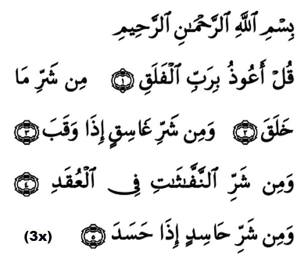

|
Terjemahan Dengan nama Allah yang Maha Pemurah lagi Maha Pengasih. (1)Katakanlah (Wahai Muhammad): "Katakanlah: Aku berlindung kepada (Allah) Tuhan yang mencipta sekalian Makhluk, (2)daripada bencana para makhluk ciptaan-Nya (3)dan daripada bahaya gelap apabila ia (merangkak) masuk, (4)dan daripada bencana kejahatan makhluk - makhluk yang menghembus - hembus pada pelbagai simpulan sihir (5)dan daripada kejahatan orang yang dengki apabila ia melakukan dengkinya". Fadhilat Wirid Abdullah bin Khubaib (RA) berkata: Di satu malam gelap dan hujan lebat, kami keluar mencari Rasulullah (SAW) untuk bersama - sama sembahyang dengannya dan kami temuinya lalu baginda bersabda sesuatu, maka saya tidak berjata apa. Kemudian baginda bersabda lagi hingga tiga kali, saya terus berkata: "Wahai Rasulullah, apakah yang saya hendak baca?" Maka baginda bersabda: "Bacalah surah Al-Ikhlas, Al-Falaq, dan An-Naas waktu petang dan pagi tiga-tiga kali nescaya memadai untuk engkau segala sesuatu." (Riwayat Abu Daud, Tarmidzi dan An - Nasa'ie) |
 |